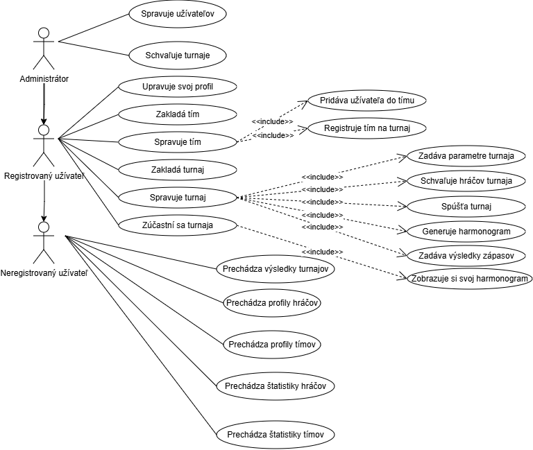
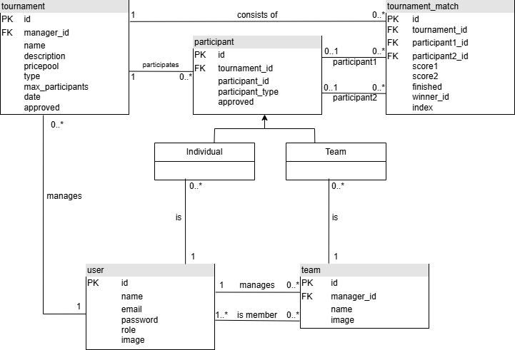
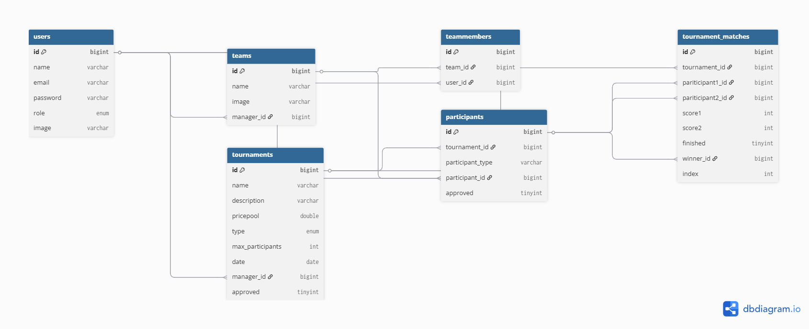

Studentské turnaje
- Autoři
- Hugo Bohácsek
xbohach00@stud.fit.vutbr.cz -
Controllery
- Filip Jenis
xjenisf00@stud.fit.vutbr.cz -
Databáza, Modely, Middleware
- Eliška Křeménková
xkremee00@stud.fit.vutbr.cz -
Views
- URL aplikace
- https://iis.radefilu.sk
Uživatelé systému pro testování
Uveďte prosím existující zástupce všech rolí uživatelů.
| Login | Heslo | Role |
|---|
| admin@testing.local | password123 | Administrátor |
| novak@email.cz | password | Registrovaný užívateľ |
| - | - | Neregistrovaný užívateľ |
Diagram prípadov užitia

Video
YouTube
Implementace
Projekt je implementovaný v PHP frameworku Laravel nad relačnou databázou MySQL/MariaDB. Nami vytvorené PHP skripty sa nachádzajú v nasledovných lokáciach:
- app/Http/Controllers
- app/Http/Middleware
- app/Models
- app/Policies
- database/
- resources/views/
- routes/web.php
- public/style.css
Pri tvorbe aplikácie bol použitý návrhový vzor MVC.
Model vrstva definuje dátové modely a vzťahy medzi nimi. Hlavnými entitami sú User, Team, Tournament, TournamentMatch a Participant.
Na mapovanie na databázu sa používa Eloquent ORM. Ku jednotlivým modelom boli vytvorené príslišné migrácie, ktoré definujú schému databázy.
View vrstvu tvoria views jednotlivých podstránok aplikácie. Využíva šablónovací systém Blade. Všetky stránky dedia spoločný layout layouts/layout.blade.php.
Controller vrstva je tvorená controllermi jednotlivých modelov. Slúžia na prijatie požiadavky pomocou routingu, interakciu s modelom a tvorbu výstupov, ktoré cez view následne komunikujú na klientskú stranu aplikácie.
Detailnější popis views
Jsou rozděleny do několika podsložek:
- layouts: slouží jako šablona pro ostatní views, obsahuje HTML hlavičku, uvnitř těla také obsahuje
header a footer,
ostatní views tvoří vždy element main s konkrétním obsahem příslušného view
- matches: pouze formulář na úpravu konkrétního zápasu
- zbylé složky vždy obsahují soubory
index, show a případně další dodatečné formuláře pro editaci, vytvoření
- index: zobrazuje seznam všech uživatelů, turnajů a týmů
- show: ukazuje detail jednotlivého vybraného týmu
Databáze
ER diagram

Schéma relačnej databázy

Instalace
Vyžadované technológie:
- PHP 8.2 a novšie
- Laravel 12.x
- MariaDB
Projekt je možné spustiť iba ak je dostupná celá štruktúra dokumentov, ktorá bola odovzdaná cez IS VUT.
Úvodná inštalácia projektu
composer installcp .env.example .envphp artisan key:generatephp artisan storage:link
Inicializácia databázy
- Nastavenie cesty a prístupových údajov do databázy v súbore .env
- Spustenie migrácií a seedovania dát -
php artisan migrate:fresh --seed
php artisan serve
Lokálne spustenie bez webového servera
- Vyžaduje Node.js 22.21.1
- Vykonajte kroky v úvodnej inštalácii projektu a inicializácii databázy
npm install && npm run buildcomposer run dev
Známé problémy
V riešení sú implementované všetky prípady užitia zo zadania. Pri testovaní sa občasne prejavil problém s chybnou generáciou pavúka zápasov - niektoré zápasy sa zaraďovali do zlej úrovne.